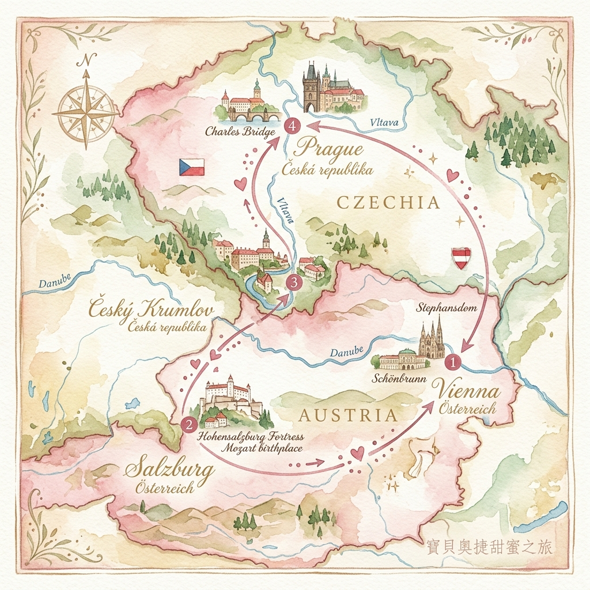

Salzburg · Český Krumlov · Prague · Vienna
逆時針環狀路線，不走回頭路：
VIE機場 →(ÖBB 3h)→ 薩爾斯堡 →(Shuttle 3h)→ CK小鎮 →(RegioJet 3h)→ 布拉格 →(Train 4h)→ 維也納
| 方向 | 日期 | 時間 | 航線 |
|---|---|---|---|
| 去程 | 7/15 (三) | 23:45 | TPE → VIE (07:15 +1) |
| 回程 | 7/27 (一) | 12:30 | VIE → TPE (06:30 +1) |

| 時間 | 行程 | 備註 |
|---|---|---|
| 07:15 | 📍 維也納機場 (VIE) | 入境、取行李、換匯 |
| 09:02 | 🚂 ÖBB 火車 → 薩爾斯堡 | 已購票 機場站出發，約3小時 |
| 13:00 | 🏨 Check-in Vier Jahreszeiten | 新城區，距火車站步行可達 |
| 15:00 | 📍 米拉貝爾宮花園 | 真善美拍攝場景，免費入園 |
| 17:00 | 📍 蓋特萊德巷 | 莫札特出生地，中世紀鐵製招牌 |
| 18:00 | 🍽️ 晚餐：Stieglkeller | 要塞山腳，炸豬排＋在地啤酒 |
| 19:30 | 🎵 入場 米拉貝爾宮音樂會 | 已購票 20:00開演，Row 3 / Seat 11 注意：不可錄影錄音 |
| 時間 | 行程 | 備註 |
|---|---|---|
| 07:10 | 🚌 Bus 840 → 貝希特斯加登 | 向司機買 RVO公車一日票 |
| 08:15 | 轉 Bus 841 → 國王湖 | 約15分鐘 |
| 09:15 | 📍 國王湖電動船遊湖 | 已購票 Seelände→Salet ⚠️ 回程票請務必保留！ |
| 11:30 | 🍽️ 午餐：Fischerstüberl | 湖畔，招牌煙燻鱒魚 |
| 13:00 | 📍 耶拿峰纜車 (Jennerbahn) | 海拔1800m，俯瞰國王湖 |
| 16:15 | 🚌 搭公車返回薩爾斯堡 | RVO一日票繼續有效 |
| 19:00 | 🍽️ 晚餐：Sternbräu | 傳統奧地利餐廳，夏日啤酒花園 |
| 時間 | 行程 | 備註 |
|---|---|---|
| 09:00 | 📍 海爾布倫宮惡作劇噴泉 | 建議提前預約，導覽約1小時 |
| 12:00 | 🎵 大教堂正午管風琴 | 看狀況 免費聆聽 |
| 13:00 | 🍽️ 午餐：Triangel | 舊城區，位置方便 |
| 14:30 | 📍 薩爾斯堡要塞 | 搭纜車上山，中歐最完整城堡 |
| 17:00 | 🚐 CK Shuttle 出發 | 已預約 火車總站集合 |
| 20:15 | 🏨 Check-in Penzion Landauer | 溫馨民宿 |
| 20:30 | 🍽️ 晚餐：Papa's Living Restaurant |
| 09:00 | 📍 CK城堡外觀 & 彩繪塔 | 外觀免費，登塔可俯瞰河景 |
| 12:30 | 🍽️ 午餐：Krčma v Šatlavské | 地窖炭烤豬腳，建議預約 |
| 14:00 | 📍 斗篷橋與城堡花園漫步 | 免費，巴洛克花園 |
| 17:15 | 🚌 RegioJet 巴士 → 布拉格 | 已購票 抵達 Na Knížecí 約20:15 |
| 20:15 | 🏨 Check-in Hotel Golden Crown | 重要 今晚務必上網訂布拉格城堡票！ |
| 09:00 | 📍 查理大橋 | 早起人少，橋上30座巴洛克雕像 |
| 10:30 | 📍 舊城廣場 & 天文鐘 | 整點前10分鐘占好位置看報時 |
| 12:30 | 🍽️ 午餐：Café Imperial | 帝國蛋糕必點，百年咖啡廳 |
| 14:30 | 📍 西班牙會堂 | 摩爾式建築，金色馬賽克裝飾 |
| 16:30 | 📍 火藥塔與市民會館 | 外觀免費，新藝術風格 |
| 09:00 | 📍 布拉格城堡 Circuit B | 需購票 QR Code 直接入場 含聖維特大教堂、舊皇宮、黃金巷 |
| 12:30 | 🍽️ 午餐：Kuchyň | 城堡旁景觀餐廳，露台俯瞰布拉格 |
| 14:30 | 📍 聖尼古拉教堂 (小城區) | 巴洛克穹頂，天頂濕壁畫 |
| 16:30 | 📍 佩特任山纜車 & 瞭望台 | 布拉格艾菲爾鐵塔，360度全景 |
| 08:15 | 🚂 搭火車前往 Karlštejn | Praha hl.n. 出發，約40分鐘 |
| 10:10 | 📍 Karlštejn Tour 1 & 2 | 看狀況 皇室宮殿與聖十字禮拜堂 |
| 13:15 | 🍽️ 午餐：U Adama | 城堡山腳下，烤肉燉菜 |
| 14:45 | 🚂 搭火車回布拉格 | 約40分鐘 |
| 19:30 | 🍽️ 晚餐：Las Adelitas | 墨西哥料理，口味轉換 |
| 09:30 | 📍 高堡區 (Vyšehrad) | 免費入園，波西米亞王國起源地 |
| 13:00 | 🍽️ 午餐：Café Savoy | 百年咖啡廳，新藝術天花板，建議預訂 |
| 15:00 | 📍 伏爾塔瓦河畔散步 | 可看查理大橋、城堡全景 |
| 17:30 | 📍 萊特納公園看夕陽 | 布拉格最佳夕陽觀景點，啤酒花園 |
| 09:48 | 🚂 RegioJet 火車 → 維也納 | 已購票 Praha hl.n. 出發，約4小時 |
| 14:00 | 🏨 Check-in Leonardo Hotel | Wien Hbf 旁 |
| 16:00 | 📍 聖史蒂芬大教堂 | 外觀免費，南塔可付費登頂 |
| 17:30 | 📍 格拉本大街 + 克恩頓大街 | 黑死病紀念柱、精品購物 |
| 19:00 | 🍽️ 晚餐：Plachutta Wollzeile | Tafelspitz 清燉牛肉鍋，建議預訂 |
| 08:45 | 📍 熊布朗宮入場 | 已購票 08:45–09:00 時段票，逾時不候！ |
| 11:00 | 📍 熊布朗宮花園 → 葛羅莉亞觀景台 | 觀景台約€5，俯瞰維也納市景 |
| 12:30 | 🍽️ 午餐：Café Residenz | 宮殿周邊，或搭 U4 回市區 |
| 14:30 | 📍 卡爾教堂 (Karlskirche) | 外觀免費，內部全景電梯約€8 |
| 15:30 | 📍 納許市場 (Naschmarkt) | 週六最熱鬧，16:30後開始收攤 |
| 18:00 | 🍽️ 晚餐：Ribs of Vienna | 豪邁豬肋排，建議預約 |
| 09:00 | 📍 上美景宮入場 | 已購票 克林姆《吻》真跡 |
| 11:30 | 📍 美景宮花園散步 | 免費，巴洛克花園 |
| 12:15 | 🍽️ 午餐：Café Central | 1876年百年咖啡廳，建議早點到 |
| 14:00 | 📍 霍夫堡 Sisi 博物館 | 已購票 QR Code 直接入場 |
| 17:15 | 回飯店換裝休息 | 充裕時間準備音樂會 |
| 19:30 | 📍 入場金色大廳 | 已購票 19:30 需到場卡位站票 |
| 20:00 | 🎵 音樂會開始 | Mozart & Vivaldi |
| 21:30 | 🍽️ 最後晚餐：Gasthaus Pöschl | 或 Café Schwarzenberg |
| 09:00 | 整理行李退房 | |
| 09:30 | 🚂 搭 Railjet 前往機場 | Wien Hbf 直達，約15分鐘 |
| 10:00 | 維也納機場報到、退稅 | 保留購物收據，Global Blue 退稅 |
| 12:30 | ✈️ 搭機返台 EVA AIR | 抵達桃園 7/28 06:30 |